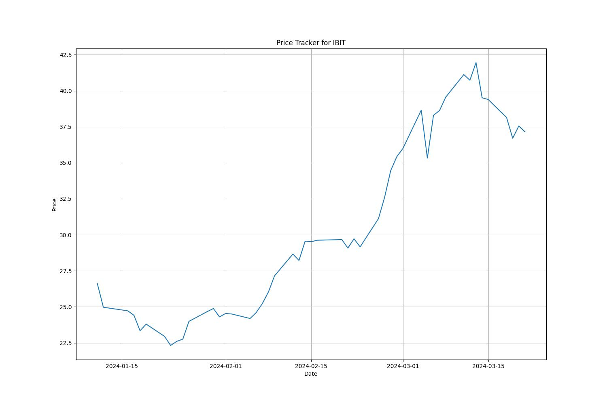
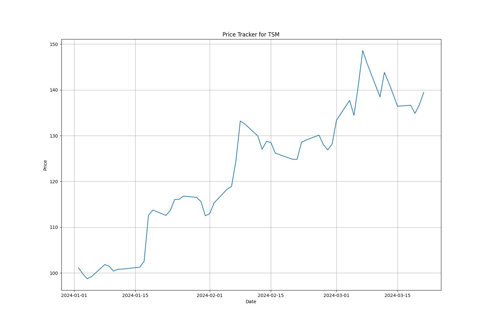
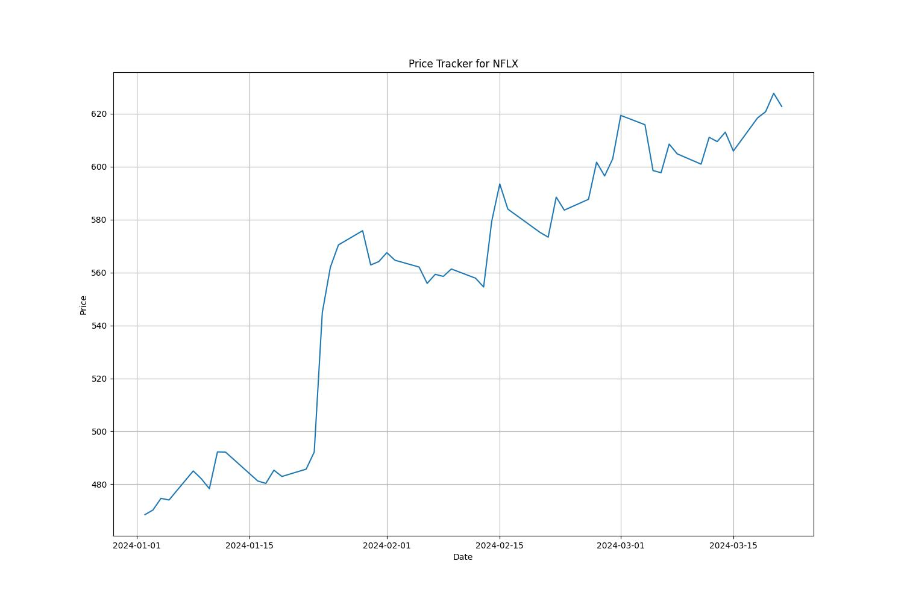
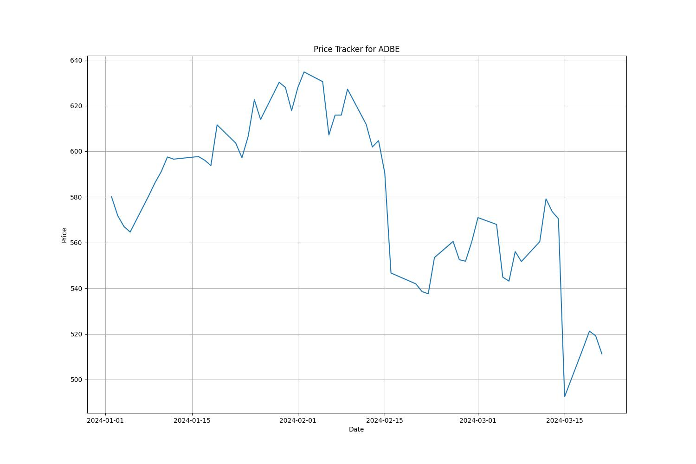
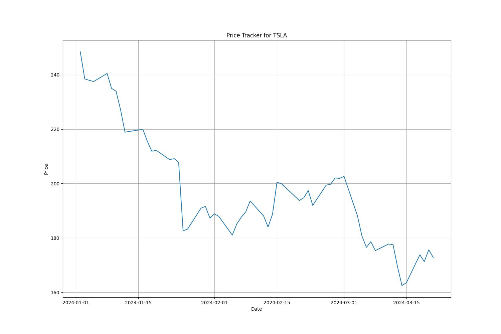
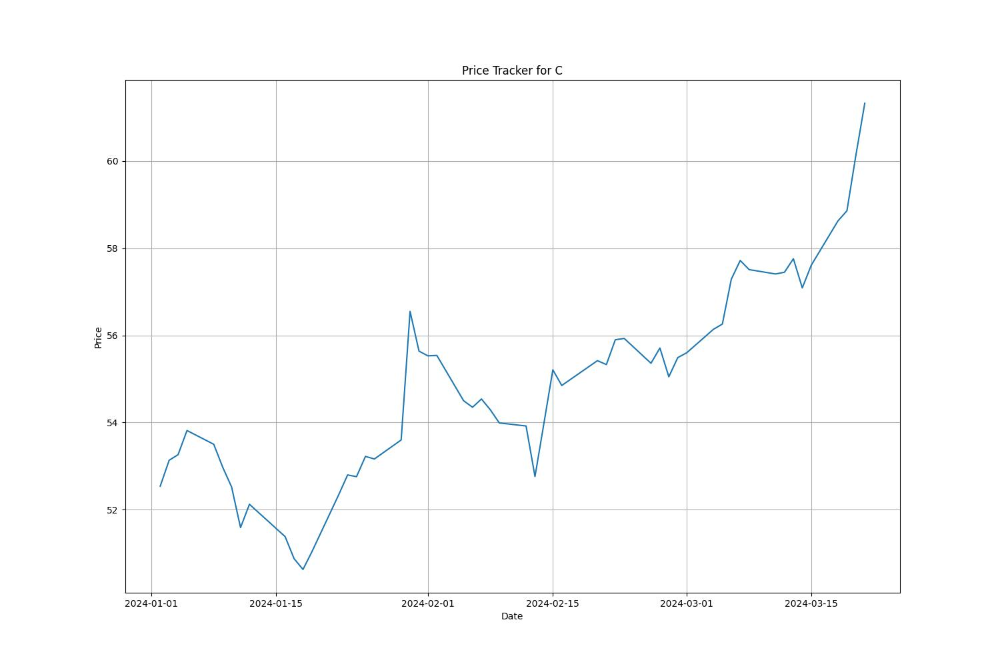
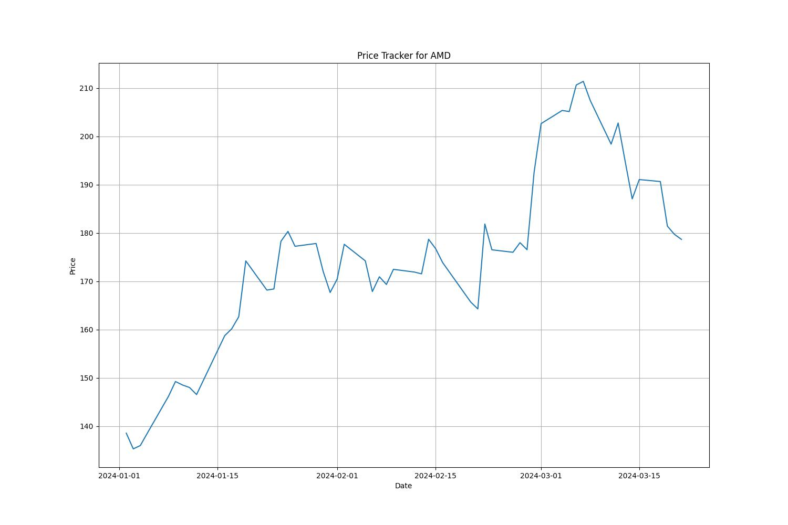

Ticker data for FXAIX (2024):
The fund normally invests at least 80% of assets in common stocks included in the S&P 500 Index, which broadly represents the performance of common stocks publicly traded in the United States. It lends securities to earn income.

Previous Close: 181.87
Fifty Day Average: 173.4534
Time Zone: America/New York
Ticker data for NVDA (2024):
NVIDIA Corporation provides graphics, and compute and networking solutions in the United States, Taiwan, China, Hong Kong, and internationally. The Graphics segment offers GeForce GPUs for gaming and PCs, the GeForce NOW game streaming service and related infrastructure, and solutions for gaming platforms; Quadro/NVIDIA RTX GPUs for enterprise workstation graphics; virtual GPU or vGPU software for cloud-based visual and virtual computing; automotive platforms for infotainment systems; and Omniverse software for building and operating metaverse and 3D internet applications. The Compute & Networking segment comprises Data Center computing platforms and end-to-end networking platforms, including Quantum for InfiniBand and Spectrum for Ethernet; NVIDIA DRIVE automated-driving platform and automotive development agreements; Jetson robotics and other embedded platforms; NVIDIA AI Enterprise and other software; and DGX Cloud software and services. The company's products are used in gaming, professional visualization, data center, and automotive markets. It sells its products to original equipment manufacturers, original device manufacturers, system integrators and distributors, independent software vendors, cloud service providers, consumer internet companies, add-in board manufacturers, distributors, automotive manufacturers and tier-1 automotive suppliers, and other ecosystem participants. NVIDIA Corporation was incorporated in 1993 and is headquartered in Santa Clara, California.

Previous Close: 903.72
Fifty Day Average: 724.465
Time Zone: America/New York
Ticker data for IBIT (2024):
The shares are intended to constitute a simple means of making an investment similar to an investment in bitcoin rather than by acquiring, holding and trading bitcoin directly on a peer-to-peer or other basis or via a digital asset exchange.

Previous Close: 37.55
Fifty Day Average: 30.226458
Time Zone: America/New York
Ticker data for TKO (2024):
TKO Group Holdings, Inc. operates as a sports and entertainment company. The company produces and licenses live events, television programs, and long-form and short-form content, reality series, and other filmed entertainment on digital and linear channels and via pay-per-view. It is involved in the merchandising of video games, apparel, equipment, trading cards, memorabilia, digital goods, and toys, as well as sale of travel packages and tickets. In addition, the company engages in the corporate sponsorships and advertising business, which offers sale of in-venue and in-broadcast advertising assets, content product integration, and digital impressions. The company was incorporated in 2023 and is based in New York, New York. TKO Group Holdings, Inc. is a subsidiary of Endeavor Group Holdings, Inc.

Previous Close: 87.37
Fifty Day Average: 83.253
Time Zone: America/New York
Ticker data for MSFT (2024):
Microsoft Corporation develops and supports software, services, devices and solutions worldwide. The Productivity and Business Processes segment offers office, exchange, SharePoint, Microsoft Teams, office 365 Security and Compliance, Microsoft viva, and Microsoft 365 copilot; and office consumer services, such as Microsoft 365 consumer subscriptions, Office licensed on-premises, and other office services. This segment also provides LinkedIn; and dynamics business solutions, including Dynamics 365, a set of intelligent, cloud-based applications across ERP, CRM, power apps, and power automate; and on-premises ERP and CRM applications. The Intelligent Cloud segment offers server products and cloud services, such as azure and other cloud services; SQL and windows server, visual studio, system center, and related client access licenses, as well as nuance and GitHub; and enterprise services including enterprise support services, industry solutions, and nuance professional services. The More Personal Computing segment offers Windows, including windows OEM licensing and other non-volume licensing of the Windows operating system; Windows commercial comprising volume licensing of the Windows operating system, windows cloud services, and other Windows commercial offerings; patent licensing; and windows Internet of Things; and devices, such as surface, HoloLens, and PC accessories. Additionally, this segment provides gaming, which includes Xbox hardware and content, and first- and third-party content; Xbox game pass and other subscriptions, cloud gaming, advertising, third-party disc royalties, and other cloud services; and search and news advertising, which includes Bing, Microsoft News and Edge, and third-party affiliates. The company sells its products through OEMs, distributors, and resellers; and directly through digital marketplaces, online, and retail stores. The company was founded in 1975 and is headquartered in Redmond, Washington.
Previous Close: 425.23
Fifty Day Average: 405.95
Time Zone: America/New York
Ticker data for AMZN (2024):
Amazon.com, Inc. engages in the retail sale of consumer products, advertising, and subscriptions service through online and physical stores in North America and internationally. The company operates through three segments: North America, International, and Amazon Web Services (AWS). It also manufactures and sells electronic devices, including Kindle, Fire tablets, Fire TVs, Echo, Ring, Blink, and eero; and develops and produces media content. In addition, the company offers programs that enable sellers to sell their products in its stores; and programs that allow authors, independent publishers, musicians, filmmakers, Twitch streamers, skill and app developers, and others to publish and sell content. Further, it provides compute, storage, database, analytics, machine learning, and other services, as well as advertising services through programs, such as sponsored ads, display, and video advertising. Additionally, the company offers Amazon Prime, a membership program. The company's products offered through its stores include merchandise and content purchased for resale and products offered by third-party sellers. It serves consumers, sellers, developers, enterprises, content creators, advertisers, and employees. Amazon.com, Inc. was incorporated in 1994 and is headquartered in Seattle, Washington.

Previous Close: 178.15
Fifty Day Average: 167.3978
Time Zone: America/New York
Ticker data for TSM (2024):
Taiwan Semiconductor Manufacturing Company Limited, together with its subsidiaries, manufactures, packages, tests, and sells integrated circuits and other semiconductor devices in Taiwan, China, Europe, the Middle East, Africa, Japan, the United States, and internationally. It provides complementary metal oxide silicon wafer fabrication processes to manufacture logic, mixed-signal, radio frequency, and embedded memory semiconductors. The company also offers customer support and engineering services, as well as manufactures masks. Its products are used in high performance computing, smartphone, Internet of things, automotive, and digital consumer electronics. The company was incorporated in 1987 and is headquartered in Hsinchu City, Taiwan.

Previous Close: 136.75
Fifty Day Average: 124.8374
Time Zone: America/New York
Ticker data for GOOGL (2024):
Alphabet Inc. offers various products and platforms in the United States, Europe, the Middle East, Africa, the Asia-Pacific, Canada, and Latin America. It operates through Google Services, Google Cloud, and Other Bets segments. The Google Services segment provides products and services, including ads, Android, Chrome, devices, Gmail, Google Drive, Google Maps, Google Photos, Google Play, Search, and YouTube. It is also involved in the sale of apps and in-app purchases and digital content in the Google Play and YouTube; and devices, as well as in the provision of YouTube consumer subscription services. The Google Cloud segment offers infrastructure, cybersecurity, databases, analytics, AI, and other services; Google Workspace that include cloud-based communication and collaboration tools for enterprises, such as Gmail, Docs, Drive, Calendar, and Meet; and other services for enterprise customers. The Other Bets segment sells healthcare-related and internet services. The company was incorporated in 1998 and is headquartered in Mountain View, California.
Previous Close: 148.74
Fifty Day Average: 142.7472
Time Zone: America/New York
Ticker data for NFLX (2024):
Netflix, Inc. provides entertainment services. It offers TV series, documentaries, feature films, and games across various genres and languages. The company also provides members the ability to receive streaming content through a host of internet-connected devices, including TVs, digital video players, TV set-top boxes, and mobile devices. It has operations in approximately 190 countries. The company was incorporated in 1997 and is headquartered in Los Gatos, California.

Previous Close: 627.69
Fifty Day Average: 565.8404
Time Zone: America/New York
Ticker data for ADBE (2024):
Adobe Inc., together with its subsidiaries, operates as a diversified software company worldwide. It operates through three segments: Digital Media, Digital Experience, and Publishing and Advertising. The Digital Media segment offers products, services, and solutions that enable individuals, teams, and enterprises to create, publish, and promote content; and Document Cloud, a unified cloud-based document services platform. Its flagship product is Creative Cloud, a subscription service that allows members to access its creative products. This segment serves content creators, students, workers, marketers, educators, enthusiasts, and communicators. The Digital Experience segment provides an integrated platform and set of applications and services that enable brands and businesses to create, manage, execute, measure, monetize, and optimize customer experiences from analytics to commerce. This segment serves marketers, advertisers, agencies, publishers, merchandisers, merchants, web analysts, data scientists, developers, and executives across the C-suite. The Publishing and Advertising segment offers products and services, such as e-learning solutions, technical document publishing, web conferencing, document and forms platform, web application development, and high-end printing, as well as Advertising Cloud offerings. It also provides consulting, technical support, and learning services. The company offers its products and services directly to enterprise customers through its sales force and local field offices, as well as to end users through app stores and through its website at adobe.com. It also distributes products and services through distributors, value-added resellers, systems integrators, software vendors and developers, retailers, and original equipment manufacturers. The company was formerly known as Adobe Systems Incorporated and changed its name to Adobe Inc. in October 2018. Adobe Inc. was founded in 1982 and is headquartered in San Jose, California.

Previous Close: 519.14
Fifty Day Average: 581.3198
Time Zone: America/New York
Ticker data for TSLA (2024):
Tesla, Inc. designs, develops, manufactures, leases, and sells electric vehicles, and energy generation and storage systems in the United States, China, and internationally. The company operates in two segments, Automotive, and Energy Generation and Storage. The Automotive segment offers electric vehicles, as well as sells automotive regulatory credits; and non-warranty after-sales vehicle, used vehicles, body shop and parts, supercharging, retail merchandise, and vehicle insurance services. This segment also provides sedans and sport utility vehicles through direct and used vehicle sales, a network of Tesla Superchargers, and in-app upgrades; purchase financing and leasing services; services for electric vehicles through its company-owned service locations and Tesla mobile service technicians; and vehicle limited warranties and extended service plans. The Energy Generation and Storage segment engages in the design, manufacture, installation, sale, and leasing of solar energy generation and energy storage products, and related services to residential, commercial, and industrial customers and utilities through its website, stores, and galleries, as well as through a network of channel partners; and provision of service and repairs to its energy product customers, including under warranty, as well as various financing options to its solar customers. The company was formerly known as Tesla Motors, Inc. and changed its name to Tesla, Inc. in February 2017. Tesla, Inc. was incorporated in 2003 and is headquartered in Austin, Texas.

Previous Close: 175.66
Fifty Day Average: 193.311
Time Zone: America/New York
Ticker data for C (2024):
Citigroup Inc., a diversified financial service holding company, provides various financial product and services to consumers, corporations, governments, and institutions worldwide. It operates through five segments: Services, Markets, Banking, U.S. Personal Banking, and Wealth. The Services segment includes Treasury and Trade Solutions, which provides cash management, trade, and working capital solutions to multinational corporations, financial institutions, and public sector organizations; and Securities Services, such as cross-border support for clients, local market expertise, post-trade technologies, data solutions, and various securities services solutions. The Markets segment offers sales and trading services for equities, foreign exchange, rates, spread products, and commodities to corporate, institutional, and public sector clients; and market-making services, including asset classes, risk management solutions, financing, prime brokerage, research, securities clearing, and settlement. The banking segment includes investment banking; advisory services related to mergers and acquisitions, divestitures, restructurings, and corporate defense activities; and corporate lending, which includes corporate and commercial banking. The U.S. Personal Banking segment provides co-branded cards and retail banking services. The Wealth segment provides financial services to high-net-worth clients through banking, lending, mortgages, investment, custody, and trust product offerings; and to professional industries, including law firms, consulting groups, accounting, and asset management. The company was founded in 1812 and is headquartered in New York, New York.

Previous Close: 60.13
Fifty Day Average: 55.0974
Time Zone: America/New York
Ticker data for META (2024):
Meta Platforms, Inc. engages in the development of products that enable people to connect and share with friends and family through mobile devices, personal computers, virtual reality headsets, and wearables worldwide. It operates in two segments, Family of Apps and Reality Labs. The Family of Apps segment offers Facebook, which enables people to share, discuss, discover, and connect with interests; Instagram, a community for sharing photos, videos, and private messages, as well as feed, stories, reels, video, live, and shops; Messenger, a messaging application for people to connect with friends, family, communities, and businesses across platforms and devices through text, audio, and video calls; and WhatsApp, a messaging application that is used by people and businesses to communicate and transact privately. The Reality Labs segment provides augmented and virtual reality related products comprising consumer hardware, software, and content that help people feel connected, anytime, and anywhere. The company was formerly known as Facebook, Inc. and changed its name to Meta Platforms, Inc. in October 2021. The company was incorporated in 2004 and is headquartered in Menlo Park, California
Previous Close: 505.52
Fifty Day Average: 449.3268
Time Zone: America/New York
Ticker data for INTC (2024):
Intel Corporation designs, develops, manufactures, markets, and sells computing and related products and services worldwide. It operates through Client Computing Group, Data Center and AI, Network and Edge, Mobileye, and Intel Foundry Services segments. The company's products portfolio comprises central processing units and chipsets, system-on-chips (SoCs), and multichip packages; mobile and desktop processors; hardware products comprising graphics processing units (GPUs), domain-specific accelerators, and field programmable gate arrays (FPGAs); and memory and storage, connectivity and networking, and other semiconductor products. It also offers silicon devices and software products; and optimization solutions for workloads, such as AI, cryptography, security, storage, networking, and leverages various features supporting diverse compute environments. In addition, the company develops and deploys advanced driver assistance systems (ADAS), and autonomous driving technologies and solutions; and provides advanced process technologies backed by an ecosystem of IP, EDA, and design services, as well as systems of chips, including advanced packaging technologies, software and accelerate bring-up, and integration of chips and driving standards. Further, it delivers and deploys intelligent edge platforms that allow developers to achieve agility and drive automation using AI for efficient operations with data integrity, as well as provides hardware and software platforms, tools, and ecosystem partnerships for digital transformation from the cloud to edge. The company serves original equipment manufacturers, original design manufacturers, cloud service providers, and other manufacturers and service providers. It has a strategic agreement with Synopsys, Inc. to develop EDA and IP solutions; and ARM that enables chip designers to build optimized compute SoCs on the Intel 18A process. Intel Corporation was incorporated in 1968 and is headquartered in Santa Clara, California.
Previous Close: 42.2
Fifty Day Average: 44.4836
Time Zone: America/New York
Ticker data for AMD (2024):
Advanced Micro Devices, Inc. operates as a semiconductor company worldwide. It operates through Data Center, Client, Gaming, and Embedded segments. The company offers x86 microprocessors and graphics processing units (GPUs) as an accelerated processing unit, chipsets, data center, and professional GPUs; and embedded processors, and semi-custom system-on-chip (SoC) products, microprocessor and SoC development services and technology, data processing unites, field programmable gate arrays (FPGA), and adaptive SoC products. It provides processors under the AMD Ryzen, AMD Ryzen PRO, Ryzen Threadripper, Ryzen Threadripper PRO, AMD Athlon, AMD Athlon PRO, and AMD PRO A-Series brand names; graphics under the AMD Radeon graphics and AMD Embedded Radeon graphics; and professional graphics under the AMD Radeon Pro graphics brand name. In addition, the company offers data center graphics under the Radeon Instinct and Radeon PRO V-series brands, as well as servers under the AMD Instinct accelerators brand; server microprocessors under the AMD EPYC brands; low power solutions under the AMD Athlon, AMD Geode, AMD Ryzen, AMD EPYC, AMD R-Series, and G-Series brands; FPGA products under the Virtex-6, Virtex-7, Virtex UltraScale+, Kintex-7, Kintex UltraScale, Kintex UltraScale+, Artix-7, Artix UltraScale+, Spartan-6, and Spartan-7 brands; adaptive SOCs under the Zynq-7000, Zynq UltraScale+ MPSoC, Zynq UltraScale+ RFSoCs, Versal HBM, Versal Premium, Versal Prime, Versal AI Core, Versal AI Edge, Vitis, and Vivado brands; and compute and network acceleration board products under the Alveo brand. It serves original equipment and design manufacturers, public cloud service providers, system integrators, independent distributors, and add-in-board manufacturers through its direct sales force, and sales representatives. Advanced Micro Devices, Inc. was incorporated in 1969 and is headquartered in Santa Clara, California.

Previous Close: 179.73
Fifty Day Average: 177.8774
Time Zone: America/New York